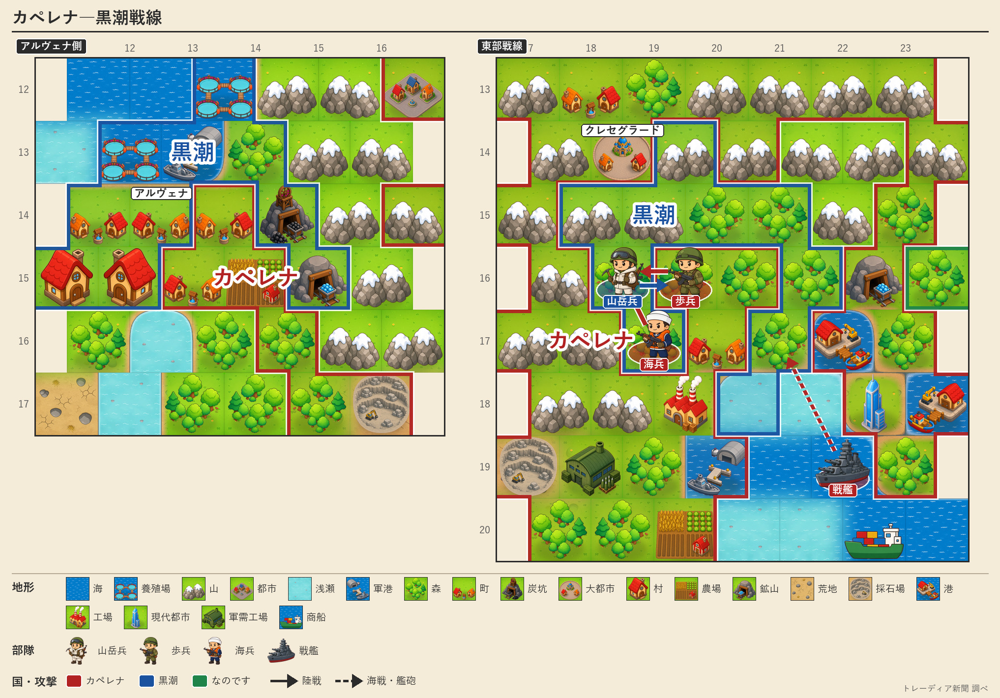

黒潮、オリョルッルと停戦
カペレナ戦はなお続く
第137期以来の戦争終結 同じ期に兵站基地を失い、和平と継戦が同居

【総合部】黒潮自治国とオリョルッル王国は第155期、停戦に合意し、第137期に始まった戦争を終えた。黒潮は二つの戦争のうち一つを終え、カペレナ王国との防衛に力を絞れるようになる。しかし同じ期に、カペレナ軍は黒潮の兵站基地を占領した。停戦で一正面が静まる一方、残る戦線では補給の拠点を失った。
黒潮は人口1万9,600人に対し、今期のカペレナ戦で4,000人の損害を受けた。兵力は2万7,300人、働き手は2,000人不足している。停戦が生んだ余力を防衛と暮らしの再建のどちらへ振り向けるかは、小国の存続に直結する。外交面は2面、戦況は3面。
帝都脇の炭坑、泰平領に
泰平天国は帝都アルガリストに隣接する炭坑を制圧し、帝国山岳兵一部隊を全滅させた。首都アルガリストは今期末も帝国領に残るが、帝国は人口7,300人、領土8区画に縮小した。詳報は4面。
金野、チェスへ宣戦
金野伯爵領はチェス＝シロバキア共和国へ宣戦し、第160期に開戦する見通しとなった。チェスは銀嶺侯国とも第159期から戦争状態に入る予定で、白波王国とはすでに交戦中だ。詳報は5面。